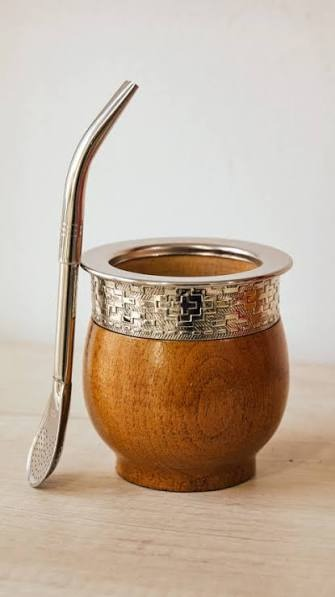
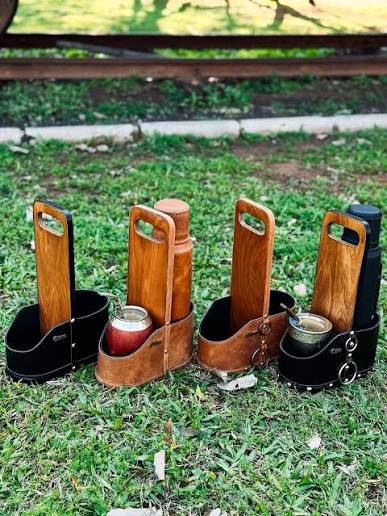

Todo lo que necesitás para cebar como un experto
Productos artesanales para los amantes del mate.
¡Explora nuestra línea de productos y lleva la tradición del mate a tu hogar!
Nuestros productos

Mates premium con estuche
Presentación de lujo, ideales para regalo.

Mates con terminación en plata
Grabados a mano por artesanos locales.

Mates de madera
Con bombilla de acero inoxidable incluida.

Sets completos
Termo, yerbera y mate en un mismo set.

Mates rústicos
Tallados en tronco, únicos e irrepetibles.

Porta termo
Resistente y práctico para llevar tu termo favorito.
Lo que dicen nuestros clientes
"El mejor mate que compré en años."
— Julieta R."Envío rápido y productos de calidad."
— Martín F."La yerba tiene un sabor increíble."
— Carla D."Producto perfecto para mis mates matutinos."
— Pablo G."Los mates son de alta calidad y muy hermosos."
— Sofía L.